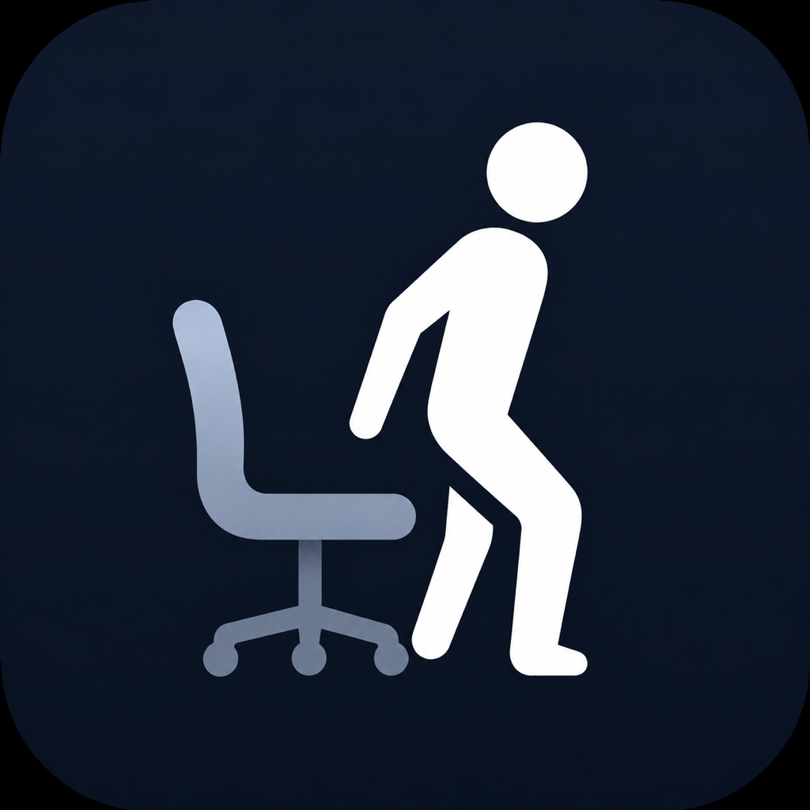

Automatic schedule
Set work hours and weekdays once. Local iPhone notifications handle the daily reminders.

Time to MoveAutomatic stand up reminder for iPhone
Choose your work hours, active days, and reminder rhythm once. Time to Move then reminds you automatically, without starting a timer every day.
Download on the App Store1-day trial · One lifetime purchase · No subscription
Set work hours and weekdays once. Local iPhone notifications handle the daily reminders.
Get one reminder to move and another when it is time to return to work.
No account, ads, analytics, or cloud sync. Settings and records stay on your device.
设置一次工作时间和提醒节奏，之后每天自动提醒你起身活动。
設定一次工作時間和提醒節奏，之後每天自動提醒你起身活動。
作業時間と通知間隔を一度設定するだけ。毎日、立ち上がる時間を自動で知らせます。
근무 시간과 알림 간격을 한 번 설정하면, 매일 일어나 움직일 시간을 알려 드립니다.
Arbeitszeit und Rhythmus einmal festlegen, dann automatisch ans Aufstehen erinnert werden.
Configura tu horario una vez y recibe recordatorios automáticos para levantarte y moverte.
No. Once your schedule is set, reminders are scheduled automatically for your selected workdays.
No. It is a focused reminder for standing up during desk work. It does not provide exercise courses or medical advice.
No. There is no sign-in. Your settings and records remain on your device.
No. The app has a 1-day trial followed by an optional one-time lifetime purchase.